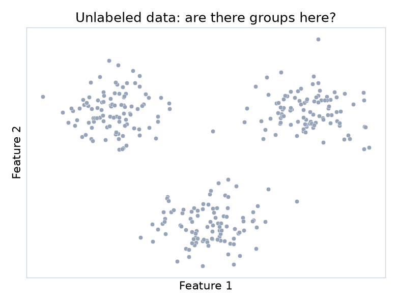

رگرسیون، طبقهبندی، درخت تصمیم، جنگل تصادفی؛ در همهی این مدلها یک نکتهی مشترک وجود داشت: برای هر نمونهی آموزشی، جواب درست را از قبل میدانستیم.
پیدا کردن گروههایی از نمونههای مشابه، بدون اینکه از قبل بدانیم هر نمونه متعلق به کدام گروه است.

همهی دادهها برچسب ندارند؛ گاهی کار مدل، پیدا کردن ساختار است، نه پیشبینی یک جواب مشخص.
این هفته یاد میگیریم چطور گروههای پنهان را در داده پیدا کنیم،
و چرا ارزیابی این کار، بدون یک جواب درست از پیش، خودش یک چالش جدید است.